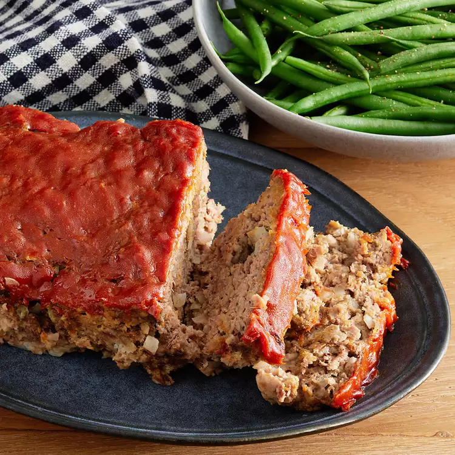

Homely Meatloaf

Description
This simple meatload recipe will relive your inner childhood...good or bad.
Ingredients
- Ground Beef
- Egg
- Onion, Chopped
- Milk
- Dried Bread Crumbs
- Ketchup
- Brown Sugar
- Mustard
Steps
- Pre-heat oven to 350F or 175C. Lightly grease pan.
- Combine and mix beef, egg, onion, milk, bread crumbs, and egg in large bowl. Transfer to greased pan.
- Mix remaining ingredients and pour over meatloaf and spread evenly.
- Bake for 1 hour or until no longer pink in center.